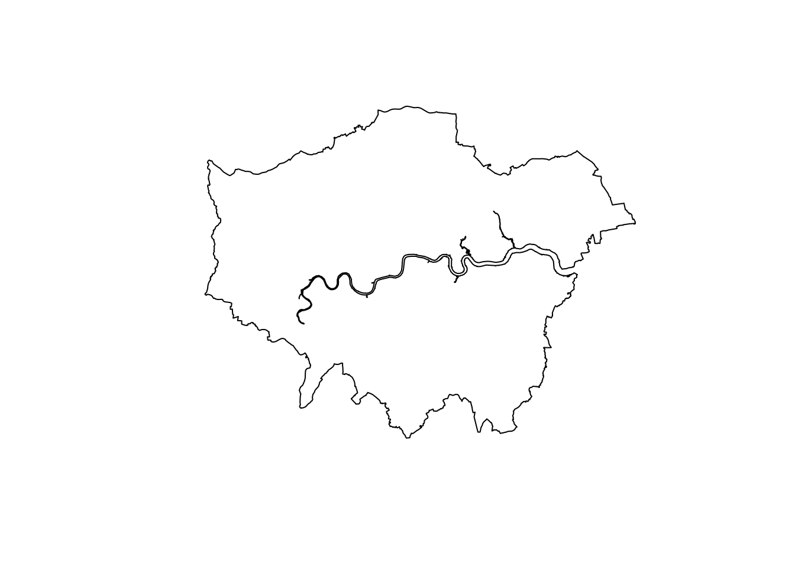

── Attaching packages ─────────────────────────────────────── tidyverse 1.3.2 ──
✔ ggplot2 3.4.0 ✔ purrr 0.3.5
✔ tibble 3.1.8 ✔ dplyr 1.0.10
✔ tidyr 1.2.1 ✔ stringr 1.5.0
✔ readr 2.1.3 ✔ forcats 0.5.2
── Conflicts ────────────────────────────────────────── tidyverse_conflicts() ──
✖ dplyr::filter() masks stats::filter()
✖ dplyr::lag() masks stats::lag()
Linking to GEOS 3.11.0, GDAL 3.5.3, PROJ 9.1.0; sf_use_s2() is TRUE
Data (c) OpenStreetMap contributors, ODbL 1.0. https://www.openstreetmap.org/copyright6 Analysing Spatial Patterns I: Geometric Operations and Spatial Queries
This week, we will be looking at the use of geometric operations and spatial queries within spatial data processing and analysis. Geometric operations and spatial queries are not really a theoretical topic per se but rather essential building blocks to overall spatial data processing and analysis such as calculating the area covered by an individual polygon in an areal unit dataset to running buffer and point-in-polygon calculations.
6.1 Lecture slides
The slides for this week’s lecture can be downloaded here: [Link]
6.2 Reading list
Essential readings
- Lovelace, R., Nowosad, J. and Muenchow, J. 2021. Geocomputation with R, Chapter 4: Spatial data operations. [Link]
- Lovelace, R., Nowosad, J. and Muenchow, J. 2021. Geocomputation with R, Chapter 5: Geometry operations. [Link]
- Lovelace, R., Nowosad, J. and Muenchow, J. 2021. Geocomputation with R, Chapter 6: Reprojecting geographic data. [Link]
Suggested readings
6.3 Bike theft in London
This week, we will be investigating bike theft in London in 2021 and look to confirm the hypothesis that bike theft primarily occurs near tube and train stations. We will be investigating its distribution across London using the point data provided within our crime dataset. We will then compare this distribution to the location of train and tube stations using specific geometric operations and spatial queries that can compare the geometry of two (or more) datasets. We will also learn how to download data from OpenStreetMap as well as use an interactive version of tmap to explore the distribution of the locations of individual bike theft against the locations of these stations.
6.3.1 Spatial analysis set up
Open a new script within your GEOG0030 project and save this script as wk6-bike-theft-analysis.r. At the top of your script, add the following metadata:
R code
# Analysing bike theft in London using geometric analysis
# Date: January 2024
# Author: Justin Now let us add all of the libraries we will be using today to the top of our script:
R code
# load libraries
library(tidyverse)
library(sf)
library(tmap)
library(osmdata)This week, we will start off using three datasets: the London MSOA boundaries for 2021, recorded crime in London for 2021 from data.police.uk, and the locations of the train and tube stations from Transport for London.
We already downloaded the crime data for 2021 during Week 4’s computer tutorial and we also saved the 2021 London MSOA boundaries last week, so we only need to download a dataset containing train and tube stations in London.
File download
| File | Type | Link |
|---|---|---|
| Train and tube stations in London | kml |
Download |
Once downloaded, move your tfl_stations.kml download to your raw data folder and create a new transport folder to contain it. After this, let’s start by loading our London MSOA file:
R code
# read in our MSOA GeoPackage
msoa_london <- st_read("data/raw/boundaries/MSOA2021_London.gpkg")Reading layer `MSOA2021_London' from data source
`/Users/justinvandijk/Library/CloudStorage/Dropbox/UCL/Web/jtvandijk.github.io/GEOG0030/data/raw/boundaries/MSOA2021_London.gpkg'
using driver `GPKG'
Simple feature collection with 1002 features and 4 fields
Geometry type: MULTIPOLYGON
Dimension: XY
Bounding box: xmin: 503574.2 ymin: 155850.8 xmax: 561956.7 ymax: 200933.6
Projected CRS: OSGB36 / British National GridCheck the CRS of our london_ward_shp spatial dataframe:
R code
# inspect CRS
st_crs(msoa_london)Coordinate Reference System:
User input: OSGB36 / British National Grid
wkt:
PROJCRS["OSGB36 / British National Grid",
BASEGEOGCRS["OSGB36",
DATUM["Ordnance Survey of Great Britain 1936",
ELLIPSOID["Airy 1830",6377563.396,299.3249646,
LENGTHUNIT["metre",1]]],
PRIMEM["Greenwich",0,
ANGLEUNIT["degree",0.0174532925199433]],
ID["EPSG",4277]],
CONVERSION["British National Grid",
METHOD["Transverse Mercator",
ID["EPSG",9807]],
PARAMETER["Latitude of natural origin",49,
ANGLEUNIT["degree",0.0174532925199433],
ID["EPSG",8801]],
PARAMETER["Longitude of natural origin",-2,
ANGLEUNIT["degree",0.0174532925199433],
ID["EPSG",8802]],
PARAMETER["Scale factor at natural origin",0.9996012717,
SCALEUNIT["unity",1],
ID["EPSG",8805]],
PARAMETER["False easting",400000,
LENGTHUNIT["metre",1],
ID["EPSG",8806]],
PARAMETER["False northing",-100000,
LENGTHUNIT["metre",1],
ID["EPSG",8807]]],
CS[Cartesian,2],
AXIS["(E)",east,
ORDER[1],
LENGTHUNIT["metre",1]],
AXIS["(N)",north,
ORDER[2],
LENGTHUNIT["metre",1]],
USAGE[
SCOPE["Engineering survey, topographic mapping."],
AREA["United Kingdom (UK) - offshore to boundary of UKCS within 49°45'N to 61°N and 9°W to 2°E; onshore Great Britain (England, Wales and Scotland). Isle of Man onshore."],
BBOX[49.75,-9,61.01,2.01]],
ID["EPSG",27700]]Of course it should be of no surprise that our msoa_lon spatial dataframe is in OSGB36 / British National Grid , however, it is always good to check. Let’s go ahead and read in our tfl_stations dataset as well:
R code
# load stations
stations_london <- read_sf("data/raw/transport/tfl_stations.kml")This dataset is provided as a kml file, which stands for Keyhole Markup Language (KML). KML was originally created as a file format used to display geographic data in Google Earth. So we definitely need to check what CRS this dataset is in and decide whether we will need to do some reprojecting.
R code
# inspect CRS
st_crs(stations_london)Coordinate Reference System:
User input: WGS 84
wkt:
GEOGCRS["WGS 84",
DATUM["World Geodetic System 1984",
ELLIPSOID["WGS 84",6378137,298.257223563,
LENGTHUNIT["metre",1]]],
PRIMEM["Greenwich",0,
ANGLEUNIT["degree",0.0174532925199433]],
CS[ellipsoidal,2],
AXIS["geodetic latitude (Lat)",north,
ORDER[1],
ANGLEUNIT["degree",0.0174532925199433]],
AXIS["geodetic longitude (Lon)",east,
ORDER[2],
ANGLEUNIT["degree",0.0174532925199433]],
ID["EPSG",4326]]The result informs us that we are going to need to reproject our data in order to use this dataframe with our msoa_london spatial dataframe. Luckily in R and the sf library, this reprojection is a relatively straightforward transformation, requiring only one function: st_transform(). The function is very simple to use: you only need to provide the function with the dataset and the code for the new CRS you wish to use with the data:
R code
# reproject our data from WGS84 to BNG
stations_london <- st_transform(stations_london, 27700)We can double-check whether our new variable is in the correct CRS by using the st_crs() command:
R code
# inspect CRS
st_crs(stations_london)Coordinate Reference System:
User input: EPSG:27700
wkt:
PROJCRS["OSGB36 / British National Grid",
BASEGEOGCRS["OSGB36",
DATUM["Ordnance Survey of Great Britain 1936",
ELLIPSOID["Airy 1830",6377563.396,299.3249646,
LENGTHUNIT["metre",1]]],
PRIMEM["Greenwich",0,
ANGLEUNIT["degree",0.0174532925199433]],
ID["EPSG",4277]],
CONVERSION["British National Grid",
METHOD["Transverse Mercator",
ID["EPSG",9807]],
PARAMETER["Latitude of natural origin",49,
ANGLEUNIT["degree",0.0174532925199433],
ID["EPSG",8801]],
PARAMETER["Longitude of natural origin",-2,
ANGLEUNIT["degree",0.0174532925199433],
ID["EPSG",8802]],
PARAMETER["Scale factor at natural origin",0.9996012717,
SCALEUNIT["unity",1],
ID["EPSG",8805]],
PARAMETER["False easting",400000,
LENGTHUNIT["metre",1],
ID["EPSG",8806]],
PARAMETER["False northing",-100000,
LENGTHUNIT["metre",1],
ID["EPSG",8807]]],
CS[Cartesian,2],
AXIS["(E)",east,
ORDER[1],
LENGTHUNIT["metre",1]],
AXIS["(N)",north,
ORDER[2],
LENGTHUNIT["metre",1]],
USAGE[
SCOPE["Engineering survey, topographic mapping."],
AREA["United Kingdom (UK) - offshore to boundary of UKCS within 49°45'N to 61°N and 9°W to 2°E; onshore Great Britain (England, Wales and Scotland). Isle of Man onshore."],
BBOX[49.75,-9,61.01,2.01]],
ID["EPSG",27700]]You should see that our london_stations spatial dataframe is now in OSGB36 / British National Grid. We are now ready to load our final dataset - our collection of csv's that contain the crimedata for London for 2021. We can do this by repeating the steps we took during Week 4’s computer tutorial:
R code
# create a list of all csv files in the crime folder
all_crime_df <- list.files(path = "data/raw/crime/all-crime/", full.names = TRUE, recursive = TRUE) |>
# apply the read_csv() function on each of these files
lapply(read_csv) |>
# combine ('bind') them all together into one
bind_rows()Now we have loaded all crime data again, we want to do three things:
- Extract only those crimes that are bicycle thefts.
- Convert our
csvinto a spatial dataframe that shows the locations of our crimes, as per the latitude and longitudes provided. - Transform our data from WGS84 / 4326 to BNG / 27700.
R code
# filter all crimes by bicycle thefts only
bike_theft <- all_crime_df |>
# filter according to crime type, filter out crimes with no location data
filter(`Crime type` == "Bicycle theft" & !is.na(Longitude) & !is.na(Latitude)) |>
# only keep the longitude and latitude columns
dplyr::select(Longitude, Latitude) |>
# transform into a point spatial dataframe, projected in WGS84
st_as_sf(coords = c("Longitude", "Latitude"), crs = 4236) |>
# transform into BNG
st_transform(27700)We now have our three datasets loaded, it is time for a little data checking. We can see just from our Environment window that in total, we have 302 train and tube stations and 20,768 crimes to look at in our analysis. We can double-check the (Attribute) tables of our newly created spatial dataframes to see what data we have to work with. You can either do this manually by clicking on the variable, or using commands such as head(), summary() and names() to get an understanding of our dataframe structures and the field names present.You can choose your approach, but make sure to look at your data.
As you should remember from the code above, for our bicycle theft data, we actually only have our geometry column because this is all that we extracted from our collection of crime csv's. For our stations_london spatial dataframe, we have a little more information, including the name of the station, its address, and as its geometry.
Now, let’s map all three layers of data onto a single map using tmap:
R code
# plot our London MSOAs
tm_shape(msoa_london) + tm_fill() +
# then add bike crime
tm_shape(bike_theft) + tm_dots(col = "blue") +
# then add stations
tm_shape(stations_london) + tm_dots(col = "red")
Let’s think about the distribution of our data: we can already see that our bike theft is clearly highly concentrated in the centre of London although we can certainly see some clusters in other areas. Let’s go ahead and temporally remove the bike theft data from our map for now to see where our tube and train stations are located.
To remove the bike data, simply put a comment sign in front of that piece of code and re-run the code:
R code
# plot our London MSOAs
tm_shape(msoa_london) + tm_fill() +
# then add bike crime
# tm_shape(bike_theft) + tm_dots(col = "blue") +
# then addstations
tm_shape(stations_london) + tm_dots(col = "red")
We can see our train and tube stations are only present in primarily the north of London and not really present in the south. This is not quite right and in fact our dataset only contains those train stations used by Transport for London within the tube network rather than all the stations in London. We will need to fix this before conducting our full analysis. But this isn’t the only problem with our dataset. We can also see that both our bike_theft spatial dataframe and our stations_london spatial dataframe extend beyond our London boundaries.
6.3.2 Data preparation
When we want to reduce a dataset to the spatial extent of another, there are two different approaches to conducting this in spatial analysis: a subset or a clip. Each deal with the geometry of the resulting dataset in slightly different ways.
- A clip-type operation works a bit like a cookie-cutter: it will take the geometry of the input layer (i.e. the layer you want to clip), places a ‘cookie-cutter’ layer on top (i.e. the layer you want to clip by) and then returns only the parts of the input layer contained within the cookie-cutter. This will mean that the geometry of our resulting layer will be modified, if it contains observation features that extend further than the ;cookie-cutter’ extent it will literally ‘cut’ the geometry of our data.
- A subset-type operation is what is known in GIScience-speak as a select by location query. In this case, our subset will return the full geometry of each observation feature of the input layer that intersects with our second layer. Any geometry that does not intersect with our second layer will be removed from the geometry of our resulting layer.
Because we are using point data, we can use either approach because it is not possible to split the geometry of a single point feature. When it comes to polygon and line data, not understanding the differences between the two approaches can lead you into difficulties with your data processing as there will be differences in the feature geometry between the clipped layer and the subset layer.
Each approach is implemented differently in R. To subset our data, we only need to use the base R library to selection using [] brackets:
R code
# subset
bike_theft <- bike_theft[msoa_london, ]If we want to clip our data, we need to use the st_intersection() function from the sf library.
R code
# clip
bike_theft <- bike_theft |>
st_intersection(msoa_london)Warning: attribute variables are assumed to be spatially constant throughout all
geometriesOut of the two, the subset approach is the fastest to use as R is simply comparing the geometries rather than also editing the geometries, but which approach you use with future data is always dependent on your data and the output you need.
Before we go ahead and sort out our london_stations spatial dataframe, we are going to look at how we can dissolve our msoa_london spatial dataframe into a single feature. Reducing a spatial dataframe to a single observation is often required when using R and sf‘s geometric operations to complete geometric comparisons. Sometimes, also, we simply want to map an outline of an area, such as London, rather than add in the additional spatial complexities of our wards. To achieve just a single ’observation’ that represents the outline geometry of our dataset, we use the geometric operation st_union().
You can also use the st_union() function to combine two datasets into one. This can be used to merge data together that are of the same spatial type.
R code
# union
london_outline <- msoa_london |>
st_union()You should see that our london_outline spatial data frame only has one observation. You can now go ahead and plot() your london_outline spatial dataframe from your console and see what it looks like:
R code
plot(london_outline)
Back to our train and tube stations. We have seen that our current london_stations spatial dataframe does not provide the coverage of train stations in London that we expected. To add in our missing data, we will be using OpenStreetMap.
OpenStreetMap (OSM) is a free editable map of the world,although its spatial coverage is still unequal across the world. In addition, as you will find if you use the data, the accuracy and quality of the data can often be quite questionable or simply missing attribute details that we would like to have, e.g. types of roads and their speed limits, to complete specific types of spatial analysis. As a result, do not expect OSM to contain every piece of spatial data that you would want.
Whilst there are various approaches to downloading data from OpenStreetMap, we will use the osmdata library to directly extract our required OpenStreetMap (OSM) data into a variable. The osmdata library grants access within R to the Overpass API that allows us to run queries on OSM data and then import the data as either sf or sp objects. These queries are at the heart of these data downloads.